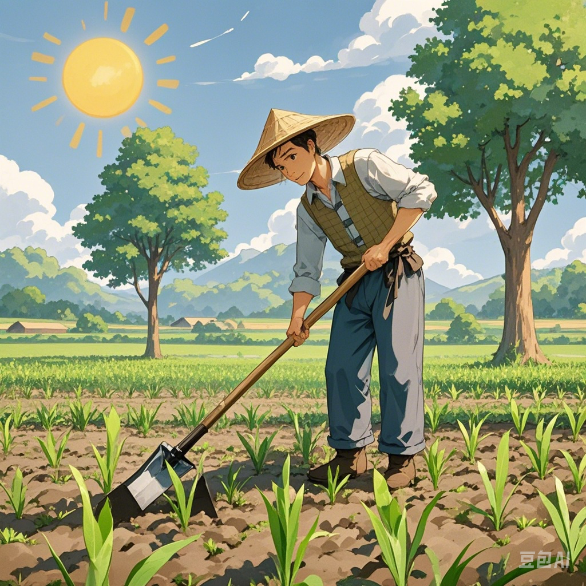

守株待兔 (shǒu zhū dài tù)
简介
守株待兔是一种古代的寓言故事，讲述了一个人在树下等待一只兔子从树上掉下来的故事。这个故事寓意着不劳而获、坐享其成的想法是不切实际的。
生成图片
关键帧1：农夫劳作
阳光明媚的田野上，一位头戴斗笠、身着粗布衣裳的农夫，手持锄头在自家田地里辛勤地劳作着。他弯着腰，一下一下地锄着地，身旁是一片刚种下不久，嫩绿嫩绿的庄稼苗，远处还有几棵大树矗立着。

关键帧2：兔子撞树
突然，一只野兔从旁边的草丛中惊慌失措地窜了出来，它的眼睛瞪得大大的，耳朵高高竖起，没命地奔跑着。可能是受到了什么惊吓，在经过田地边的一棵大树时，它直直地撞在了树干上，“砰”的一声，然后便倒地不动了。
生成视频
相关词汇
守株待兔
寓言故事
不劳而获
坐享其成